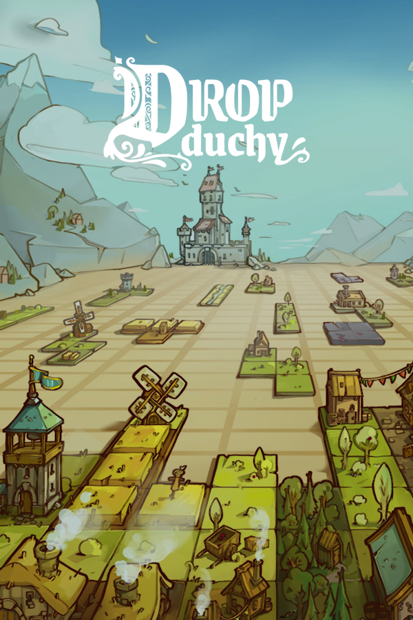

Drop Duchy
Every archived year-end list appearance, including placement and points earned.
About the Game
Drop Duchy takes on the iconic geometric puzzle gameplay we all know and love with a fresh perspective: instead of simply clearing lines, you'll be thoughtfully building a realm using pieces of various shapes and types to overcome enemy challenges.A mix of deckbuilding, puzzle and rogue-lite, the game offers a new gameplay designed to hone your appetite as a block-stacking tactician. Optimization is key to collecting precious resources, protecting your castle, and building your army. Defeat is not the end, though: use the experience gained in previous runs to unlock even more content! In each round of your run, Drop Duchy offers you a fresh and unique landscape to work with. Place tile pieces as you would in a typical block-dropping game but with a strategic twist: you need to align them to maximize their activation rules, producing maximum resources and units. Selecting the optimal structures to place next to blocks of lush forests, wild rivers or grassy plains is crucial for maximizing your materials use and nurturing a bustling realm. Forming lines grants bonuses, yet the ultimate goal is to pack up the most resources gradually. These resources will be crucial to build up your army bit by bit, ensuring your kingdom is well-protected against the enemy threats. Select your path, gather your troops to outnumber your enemies, and reclaim the regions under their control. But be careful: letting your castle take too much damage can lead to defeat.Successful battles lead your forces down branching, decision-filled paths in a march to storm the enemy fortress.If your army falls before capturing the bastion, you can quickly jump back in and try a new strategy, thanks to a cleverly designed gameplay loop. Adapt, conquer, and keep the action moving! Grow in power with a rich deckbuilding system: build and enhance constructions with over 110 unique cards, each offering powerful upgrades and modifiers. Unlock new possibilities when using building or technology cards, each granting new bonus structures to boost soldier recruitment & various other perks. Customize your deck to suit your strategy and optimize your realm’s growth. As you progress on your run, trade with markets or guilds to acquire valuable resources, use them wisely to upgrade your deck, make strategic decisions, and choose your path for the next round. Drop Duchy features a robust meta progression system with over 100 unique misssions! Climb the ranks and unlock various bonuses such as increased resources, new cards or additional health. These missions are intertwined with the three playable factions: The Duchy, The Republic, and The Order, each offering exclusive faction quests that grant faction-specific rewards. Completing these objectives across your runs not only tailors your strategy but also improves your chances of success, ensuring that every playthrough contributes to your long-term progression and victory. An original mix of puzzle gameplay and real-time strategy A brand new game experience with each run thanks to procedural generation Play with 3 Factions: The Duchy, The Order, The Republic Meta progression: over 100 challenges designed to help you through your journey Build the perfect deck with over 110 unique cards An elegant and charming art direction to please your eyes An engaging and ever-evolving soundtrack to please your ears Choose your path between lakes, glades, forests, villages, guilds… and more!
| Released | 2025-05-05 |
|---|---|
| Developer | Sleepy Mill Studio |
| Publisher | The Arcade Crew |
| Genres | Adventure, Strategy, Indie |
| Platforms | PC |
SingleplayerSteam AchievementsFull controller supportSteam CloudColorfulHistoricalRoguelikeMedievalRogueliteProcedural GenerationTurn-Based TacticsFamily Sharing
Where to Buy
Game information provided by RAWG.
Points by Year
List History
| Year | Source | List | Placement | Points |
|---|---|---|---|---|
| 2025 | NPR | The best games of 2025, picked by NPR's staff | Unranked | 1 |